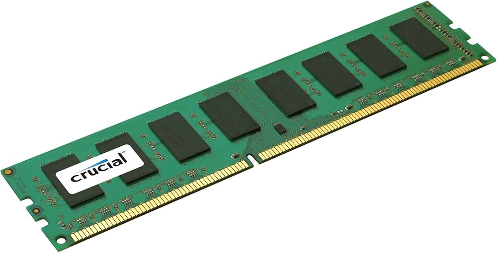

Pamięć DDR 3
Kolejnym standardem pamięci RAM jest DDR3. To unowocześnione rozwiązanie o jeszcze niższym zapotrzebowaniu na energię, wyższej prędkości działania oraz o niższym napięciu, jedynie liczba pinów pozostała niezmieniona w porównaniu z pamięcią DDR2 i wynosi 240. Pamięć RAM DDR3 zaczęła być powszechnie stosowana w 2007 roku, gdy zaczęły obsługiwać ją procesory Intel, a w 2009 roku moduły te stały się kompatybilne także z procesorami AMD. Moduły DDR3 są dostępne w sprzedaży w pojemności od 512 MB do 8 GB RAM i wciąż są powszechnie wykorzystywane w nieco starszych urządzeniach.

Pamięć RAM DDR3 a DDR2 – kluczowe różnice
* Napięcie zasilania zostało obniżone z 1.8 do 1.5 V, w pamięciach niskonapięciowych DDR3L jest to 1.35 V, a w pamięciach DDR3U zaledwie 1.2 V.
* Zużycie energii jest niższe nawet o około 40% niż w pamięci DDR2.
* Przepustowość pamięci wzrosła pomimo niższego napięcia oraz niższego zapotrzebowania na energię.
* Częstotliwość działania pamięci DDR3 może wynosić od 800 do 2400 MHz.